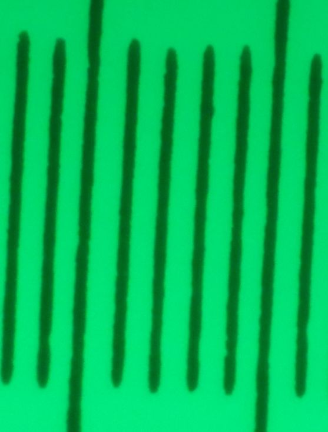
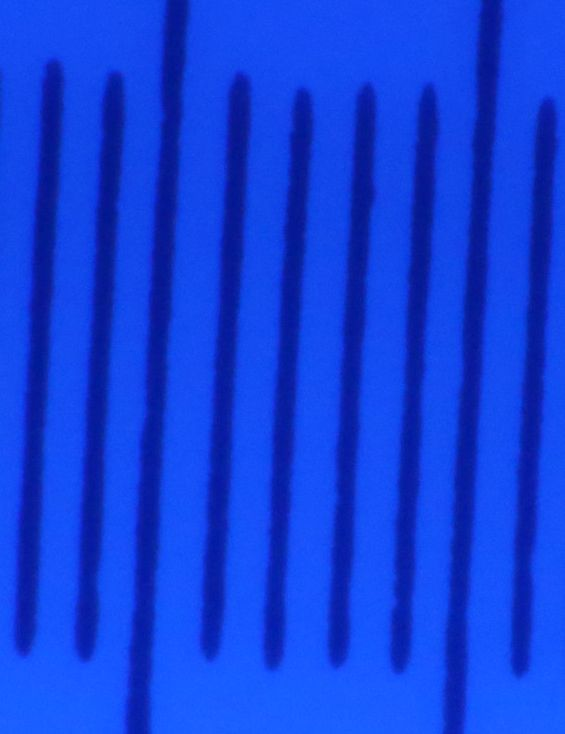

|
back
Photo Microscopy
Excellent: microscope introduction, resources and advice;
|


|

|
RGB ring light
Microscopes better resolve using blue illumination,since shorter wavelength and less opportunity for chromatic aberrations.
A 40mm RGB LED halo ring fits around microscope objectives
and can be supported by a 20mm i.d. o-ring.
 O-ring below LED halo blocks illumination... |
Bayer-filtered camera sensors have relatively sparse blue pixels, aliasing is liable with less than 4x oversampling.  Dark wedge along the center of the above M55E stylus image is partly surface not in focus, but also stylus angle not 45 degrees (twisted cantilever). |
|
Curled strip of business card glued to the halo backside... ...an o-ring secures LEDs to the objective: 
|
Rotating the headshell in a clothespin brings more of the stylus upper surface nearly in focus:  green light employs more camera pixels |
MEIJI S.PLAN M 20X longitudinal chromatic aberration correction
Microscope fine focus is indexed in microns, 200 per revolution.Images of 0.01mm test slide (with cover slip) using MEIJI S.PLAN M 20X with Series 10 tube lens
and Olympus PE 2.5X; no matching corrections.
Numbers by colors are micon settings to focus that color:
red 144
| green 153  |
white 148
|
blue 153  |
This is axial (or longitudinal) chromatic aberration.
A.O. 10X with NFK 3.3X
With an AO head, AO objectives are substantially corrected, better matching a Nikon CF PL relay lens.Headless, an NFK relay lens approximates AO tube lens corrections.
Finding a stylus in microscope objectives is easier using conventional oculars
than with camera Live View.
Since this AO head has an infinity tube lens, infinity objectives are wanted.
Series 10 AO Spencers often include a 10X objective; how well does one work on a stylus?
Because they are smaller in diameter than MEIJI and Leitz objectives
for which cardstock half-cylinders were epoxied to LED halos, a shim was cut from clear vinyl tubing.
This AO 10x objective has about 4mm working distance.
With halo illumination, a stylus tip is better illuminated with cartridge vertical centerline
rotated more nearly 60 than 45 degrees from horizontal, reducing surface in focus.
With NFK 3.3X relay lens and about 200mm projection distance,
full field of view with APS-C sensor is usefully in focus;
both of these images (downsampled, but not cropped)
were captured after central focusing (zoomed Live View):

After visually confirming that minimal detail is lost
by downsampling original (5472x3648) images by 3x,
then, given optics are NOT matched for color correction,
compared whether blue (left) or green (right) illumination yields more detail:


Approximate IrfanView color corrections settings
for recovering dynamic range after grayscale conversion
and before 3x downsampling: brightness ~25, contrast ~99, gamma ~1.65